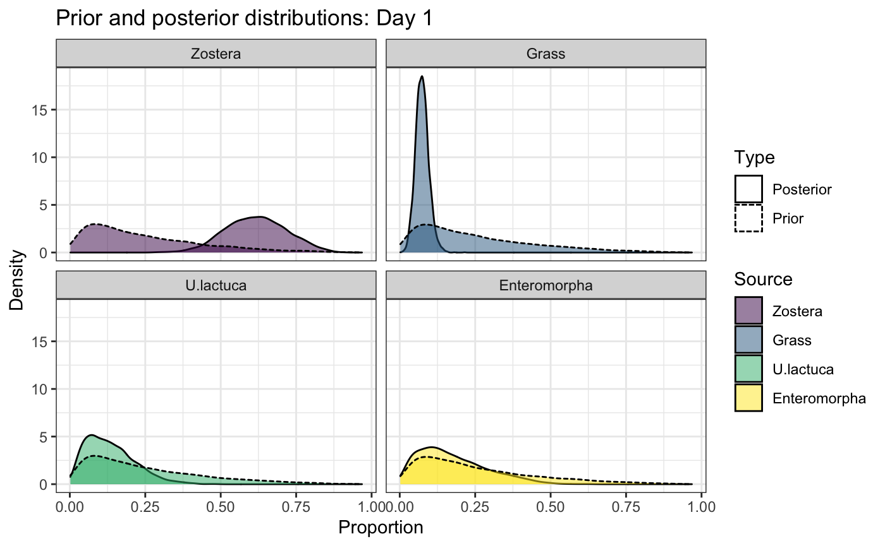
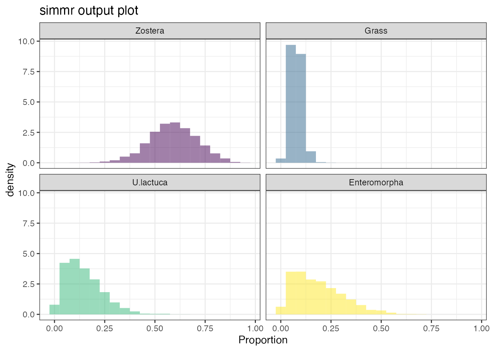
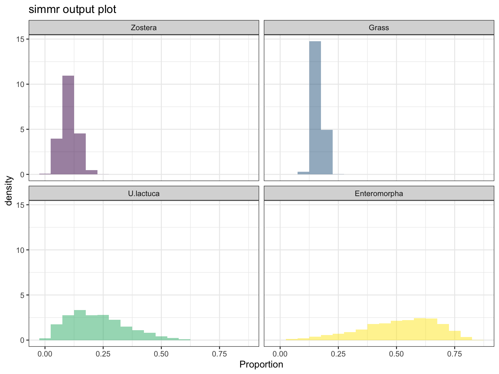
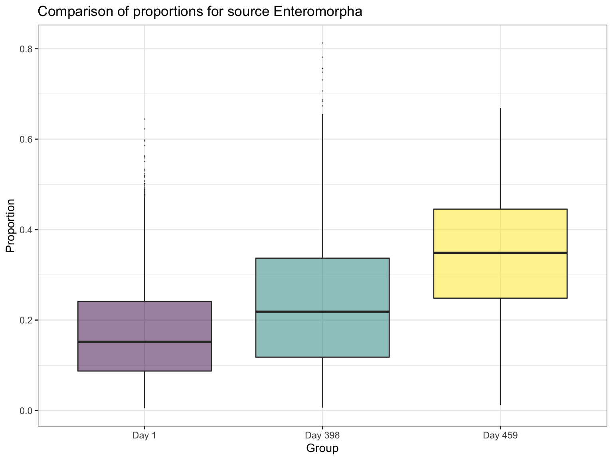

quick_start.RmdSome geese isotope data is included with this package. Find where it is with:
Load into R with:
library(readxl)
path = system.file("extdata", "geese_data.xls", package = "simmr")
geese_data = lapply(excel_sheets(path), read_excel, path = path)If you want to see what the original Excel sheet looks like you can run system(paste('open',path)).
We can now separate out the data into parts
simmr and check convergence##
## Summary for Day 1
## Worst 10 Gelman diagnostics - these values should all be close to 1.
## If any are larger than 1.1, try a longer run of simmr_mcmc.
## deviance Zostera Grass U.lactuca Enteromorpha sd[d13C_Pl]
## 1 1 1 1 1 1
## sd[d15N_Pl]
## 1If the model has converged all values should be close to 1
Check that the model fitted well:
 If the model fits well approximately half the values should be in the error bars
Look at the influence of the prior:

Look at the histogram of the dietary proportions:

Compare different groups
## Most popular orderings are as follows:
## Probability
## Day 459 > Day 398 > Day 1 0.3764
## Day 459 > Day 1 > Day 398 0.2697
## Day 398 > Day 459 > Day 1 0.1869
## Day 1 > Day 459 > Day 398 0.0694
## Day 398 > Day 1 > Day 459 0.0600
## Day 1 > Day 398 > Day 459 0.0375
For the many more options available to run and analyse output, see the main vignette via vignette('simmr')